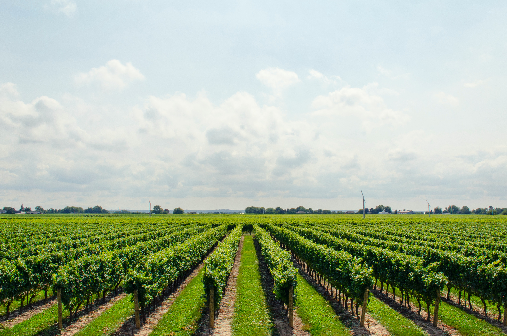
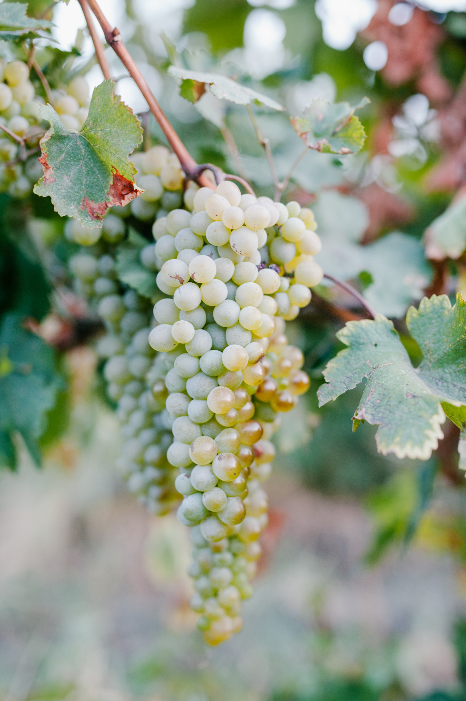

What we do.
-

Orchard irrigation scheduling is our main service. -

We create personalized schedules for your individual fields. -

ET and weather is considered in our schedules so you never have to worry. -

One on one conversations with our friendly reps provide you with answers to any questions you may have.